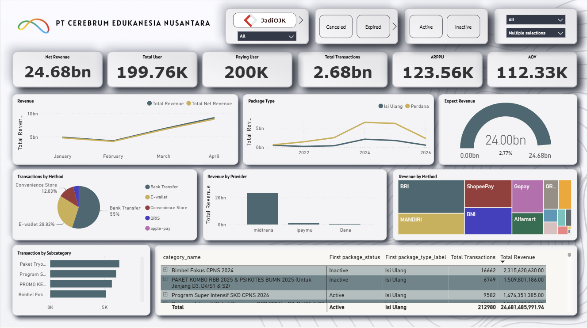
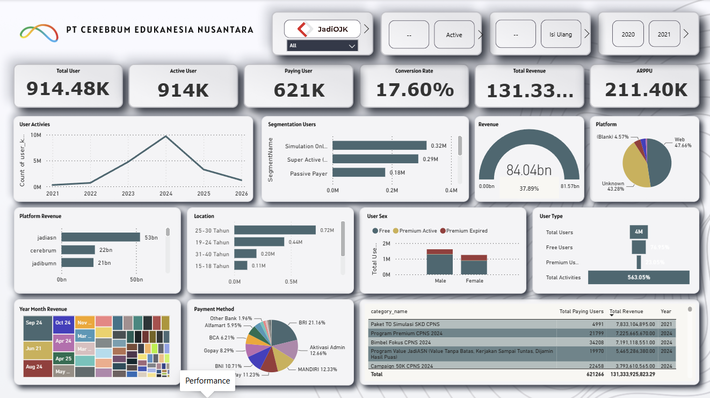
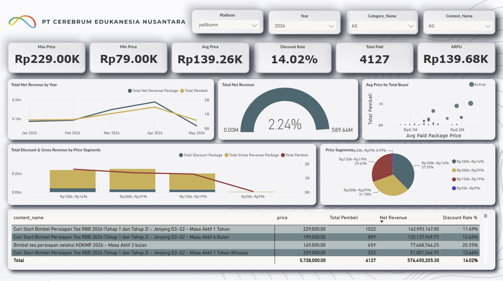
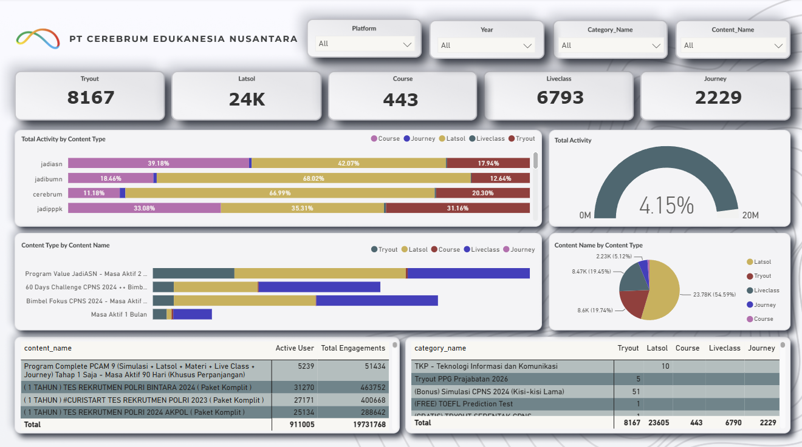

Data Science graduate yang membangun pipeline end-to-end — dari banyak database terpisah, disatukan lewat star schema, hingga dashboard Power BI yang terhubung langsung ke MySQL.
Saya lulusan Data Science Telkom University (IPK 3.74) yang fokus mengubah dataset kompleks menjadi dashboard interaktif dan narasi strategis.
Track record saya mencakup membangun data pipeline end-to-end dan mengotomasi proses bisnis manual dengan Python dan AI. Saya nyaman bekerja dari lapisan database (SQL, star schema, MySQL) sampai lapisan presentasi (Power BI, Streamlit) — sehingga insight yang dihasilkan benar-benar bisa dipakai mengambil keputusan.
Saat ini saya menjalani Magang Hub Batch 2 sebagai Data Analyst di PT Cerebrum Edukanesia Nusantara, mengerjakan kebutuhan data lintas tim Management, Marketing, Produk, IT, dan VOC.
Tools yang saya pakai di seluruh siklus data — dari ekstraksi hingga storytelling.
Proyek inti saya di Cerebrum: menyatukan data yang tersebar di banyak database menjadi satu sumber kebenaran, lalu menyajikannya secara real-time.
Saya membangun pipeline yang mengambil data dari berbagai database internal yang terpisah, menyatukannya ke dalam satu star schema (tabel fakta + dimensi), lalu menghubungkan Power BI langsung ke MySQL agar dashboard selalu mencerminkan data terbaru.
Data dari banyak database (jadiASN, jadiBUMN, jadiOJK, jadiSekdin, dll.) di-ETL ke satu data warehouse "AllinMain". Tabel fakta menyimpan transaksi & aktivitas terukur; tabel dimensi memberi konteks. Relasi bersih ini bikin Power BI cepat di-query dan mudah dikembangkan.
Empat dashboard Power BI produksi yang dibangun di atas arsitektur tersebut. Klik untuk memperbesar.




Ringkasan nyata dari tracker internal: 120 pekerjaan selama Februari–Juni 2026 untuk lintas divisi di Cerebrum.
Aplikasi, otomasi, dan analisis bisnis lain yang saya kerjakan.
Aplikasi analisis data Zoom untuk memantau liveclass — dibangun dengan Python & Streamlit, di-deploy live.
Dashboard analisis & optimasi harga paket produk, membantu tim marketing menentukan strategi pricing.
Sistem QC untuk mendeteksi soal duplikat (ASN, BUMN, Cerebrum) — SQL + Streamlit untuk menjaga kualitas konten.
Program otomasi pembuatan laporan, memangkas proses manual penyusunan laporan berulang.
Analisa harga premium 5 kompetitor, prediksi estimasi user 2026 seluruh platform, dan analisis penyebab penurunan performa Cerebrum.
Konsolidasi data lintas platform ke satu warehouse, plus mapping package–journey & variabel penghubung dimensi.
Terbuka untuk peran Data Analyst, kolaborasi, atau sekadar bertukar pikiran soal dashboard & pipeline.